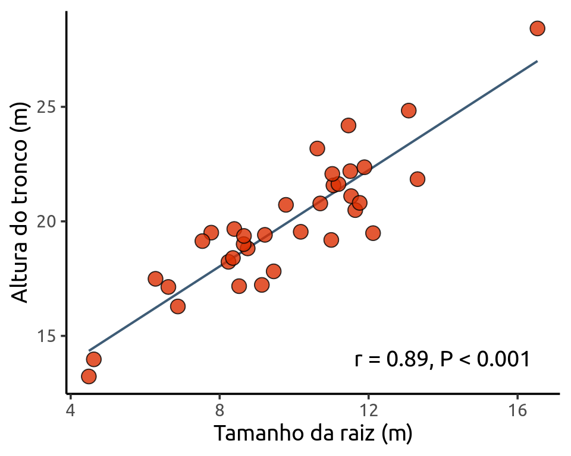
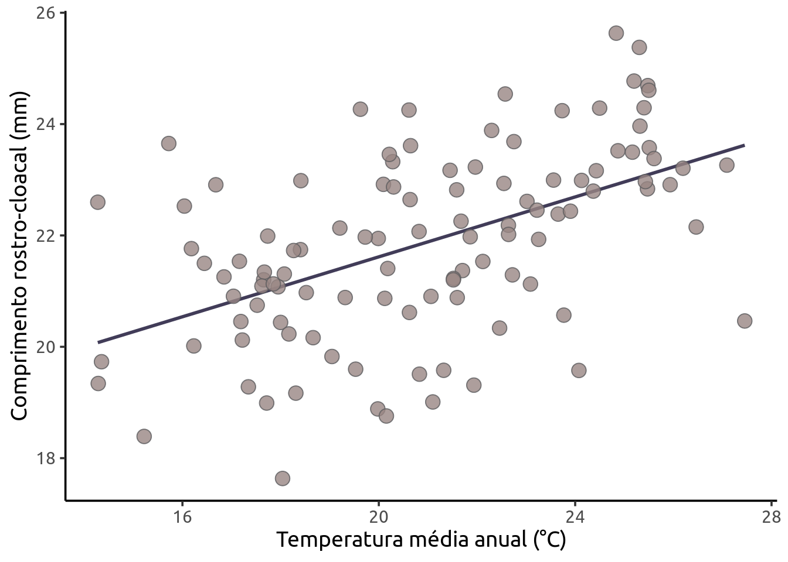

![]()
Rows: 109
Columns: 4
$ Municipio <chr> "Acorizal", "Alpinopolis", "Alto_Paraiso", "Americana", "…
$ CRC <dbl> 22.98816, 22.91788, 21.97629, 23.32453, 22.83651, 20.8698…
$ Temperatura <dbl> 24.13000, 20.09417, 21.86167, 20.28333, 25.47333, 20.1216…
$ Precipitacao <dbl> 1228.2, 1487.6, 1812.4, 1266.2, 2154.0, 1269.2, 1940.6, 1…Regressão Linear
Como vimos na sessão anterior, a correlação nos ajuda a compreender a força e direção da relação entre duas variáveis. Uma vez identificada a correlação, nosso próximo passo é determinar a equação da reta que melhor modela esta relação. Esta reta é justamente que vimos no exemplo da sessão anterior com os dados de arbusto.

1 Regressão Linear Simples
A regressão linear simples é usada para analisar a relação entre uma variável preditora (plotada no eixo-X) e uma variável resposta (plotada no eixo-Y). As duas variáveis devem ser contínuas. Diferente das correlações, a regressão assume uma relação de causa e efeito entre as variáveis. O valor da variável preditora (X) causa, direta ou indiretamente, o valor da variável resposta (Y). Assim, Y é uma função linear de X (Da Silva et al., 2022).
\[\Large y = \beta_0+\beta_1 X_i + \varepsilon_i\] Este é o modelo matemático que define uma Regressão Linear Simples, onde:
\(\large y\) é o nosso vetor de observações da nossa variável resposta
\(\large \beta_0\) é o intercepto (intercept) que representa o valor da função quando \(X = 0\)
\(\large \beta_1\) é a inclinação (slope) que mede a mudança na variável \(y\) para cada mudança de unidade da variável \(X\)
\(\large \varepsilon_i\) é no nosso vetor de erros aleatórios ou resíduos, é toda variabilidade em \(\large y\) que não pode ser explicada por \(X\)
A regressão linear também possui premissas:
As amostras devem ser independentes
As unidades amostrais são selecionadas aleatoriamente
Distribuição normal (gaussiana) dos resíduos
Homogeneidade da variância dos resíduos
2 Exemplo Prático
Mais uma vez utilizaremos o pacote ecodados.
Avaliaremos a relação entre o gradiente de temperatura média anual (°C) e o tamanho médio do comprimento rostro-cloacal (CRC em mm) de populações de Dendropsophus minutus (Anura:Hylidae) amostradas em 109 localidades no Brasil.
Pergunta: A temperatura afeta o tamanho do CRC de populações de Dendropsophus minutus?
Utilizando a função plot() podemos fazer a inspeção visual dos resíduos e checar a normalidade e a homogeneidade da variância.
Somos apresentados a quatro plots. E aqui vou tomar a liberdade de citar a excelente explicação disponível em Da Silva et al. (2022), pra que reiventar a roda né?
Os gráficos Residuals vs Fitted, Scale-Location, e Residual vs Leverage estão relacionados com a homogeneidade da variância. Nestes gráficos, esperamos ver os pontos dispersos no espaço sem padrões com formatos em U ou funil. Neste caso, vemos que as linhas vermelhas (que indicam a tendência dos dados) estão praticamente retas, seguindo a linha pontilhada, sugerindo que não exista heterogeneidade de variância dos resíduos. O gráfico Residual vs Leverage, identifica os valores extremos que estejam a mais de uma unidade da distância de Cook (linha pontilhada vermelha). Quando muito discrepantes, esses valores podem influenciar os resultados dos testes estatísticos. Também não temos problemas com esse pressuposto do modelo aqui. O gráfico Normal Q-Q (quantile- quantile plot) mede desvios da normalidade. Neste caso, esperamos que os pontos sigam uma linha reta (i.e., fiquem muito próximos da linha pontilhada) e não apresentem padrões com formatos de S ou arco.
Confirmado que nossos dados atendem as premissas de normalidade e heterocedasticidade dos resíduos, podemos agora ver os resultados da nossa regressão usando as funções anova() e summary(). Falaremos de ANOVA (Análise de Variância) na próxima sessão, mas a função anova() quando fornecida um único modelo nos retorna a famosa Tabela da Anova, que nos mostra se os termos do nosso modelo foram significativos.
Analysis of Variance Table
Response: CRC
Df Sum Sq Mean Sq F value Pr(>F)
Temperatura 1 80.931 80.931 38.92 9.011e-09 ***
Residuals 107 222.500 2.079
---
Signif. codes: 0 '***' 0.001 '**' 0.01 '*' 0.05 '.' 0.1 ' ' 1A nossa velha amiga summary() nos fornece também a significância dos termos do modelo, e ainda os valores dos coeficientes, e do coeficiente de determinação (\(R^2\)), que indica o quanto da variação em \(y\) é explicada pela nossa variável \(X\).
Call:
lm(formula = CRC ~ Temperatura, data = den_min)
Residuals:
Min 1Q Median 3Q Max
-3.4535 -0.7784 0.0888 0.9168 3.1868
Coefficients:
Estimate Std. Error t value Pr(>|t|)
(Intercept) 16.23467 0.91368 17.768 < 2e-16 ***
Temperatura 0.26905 0.04313 6.239 9.01e-09 ***
---
Signif. codes: 0 '***' 0.001 '**' 0.01 '*' 0.05 '.' 0.1 ' ' 1
Residual standard error: 1.442 on 107 degrees of freedom
Multiple R-squared: 0.2667, Adjusted R-squared: 0.2599
F-statistic: 38.92 on 1 and 107 DF, p-value: 9.011e-09Podemos apresentar nossos resultados por meio de um gráfico de dispersão como vimos anteriormente.
ggplot(data = den_min, aes(x = Temperatura, y = CRC)) +
labs(x = "Temperatura média anual (°C)",
y = "Comprimento rostro-cloacal (mm)") +
geom_smooth(method = lm, se = FALSE,
color = "#413c58", alpha = 0.8) +
geom_point(size = 4, shape = 21,
fill = "#988683", color="#5c5c5e", alpha = 0.8) +
theme_classic(base_size = 14, base_family = "Ubuntu") +
theme(legend.position = "none")`geom_smooth()` using formula = 'y ~ x'
2.1 Interpretando os resultados
Aqui vale comentar sobre as diferentes hipóteses que são testadas em cada função.
A função summary() realiza um teste \(t\) para cada um dos betas do modelo, no nosso caso de uma regressão linear simples o intercepto e o slope. A hipótese nula neste caso é:
\[H_0: \beta_i = 0 \quad versus \quad H_a: \beta_i \neq 0\]
Ou seja, o teste avalia se a variável explicativa \(X\) tem efeito significativo sobre \(y\) controlando pelas outras variáveis do modelo.
Já a função anova() está fazendo uma análise de variância (ANOVA) que testa a seguinte hipótese nula global de que todos os coeficientes, exceto o intercepto, são iguais a zero:
\[H_0: \beta_1 = \beta_2 = \cdots \beta_n = 0\]
Mas como falamos de uma regressão linear simples, testamos somente o nosso \(\beta_1\).
Ou seja, o teste \(F\) da ANOVA avalia se o modelo completo com as variáveis preditoras explica significativamente mais variância do que um modelo nulo (só com o intercepto).
Se o valor-p do teste \(F\) for pequeno, rejeitamos \(H_0\) e concluímos que pelo menos uma variável tem efeito significativo sobre a resposta.
No nosso exemplo, nosso beta para Temperatura (\(X\)) foi significativo, então rejeitamos a hipótese nula de que não existe relação entre o tamanho do CRC das populações de D. minutus e a temperatura da localidade onde elas ocorrem (\(F_{1,107} = 38,92, P < 0,001\)).
Neste caso, ao usar o comando coef(modelo_regressao), obtemos os valores 16,23 e 0,27, respectivamente os valores do intercepto (β0) e da temperatura (β1). O valor de 0,27 indica que a mudança de uma unidade na variável preditora (neste caso, graus), aumenta em 0,27 unidades (neste caso, centímetros) da variável dependente. (Da Silva et al., 2022)
References
DA SILVA, F. R. et al. Análises ecológicas no r. [s.l.] Clube de Autores, 2022.